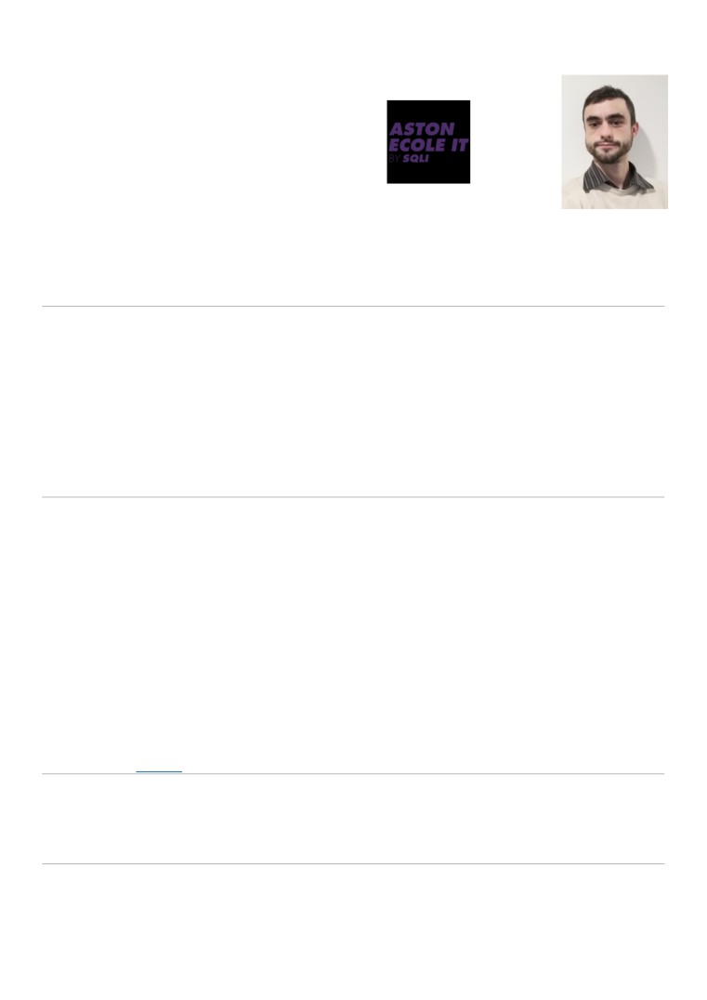

Charles Daudré-Vignier
57, rue Victor Hugo
91 120 Palaiseau
07 67 89 13 08
charles+recrutement@daudre-vignier.fr
Permis B
Anglais technique (parlé, écrit)
Alternance Administrateur Système Réseaux et Cloud
trois semaines en entreprise pour une semaine en formation
Formations
2020-2022, Administrateur Système Réseau et Cloud (ASRC), titre RNCP équivalent Bac+3/4
École Aston, Arcueil
2018-2020, Technicien Système, Réseau et Sécurité (TSRS).
École Aston en alternance (une semaine d’école pour trois de travail en entreprise), diplôme en cours d’obtention.
2016-2017, DAEU-B finance de l’entreprise et comptabilité.
Université des Sciences et Technologies de Nancy, diplôme obtenu.
2011-2012, BEP Gestion et Exploitation des Transports.
Lycée Simon Lazard, diplôme obtenu.
Expériences professionnelles
2018-2020, Technicien Système, Réseau et Téléphonie chez iQera (Paris) au sein de la DSI.
• Gestion de parc avec GLPI/Fusion Inventory
• Maintenance réseau (IP, DHCP, DNS, Cisco IOS)
• Services de proximité, gestion des demandes et incidents via ticket GLPI
• Gestion et administration VoIP Cisco Unified Communications (BAT et débogage inclus)
• Gestion de parc applicatif et CRM, automatisation de déploiement (scripts, développement d’installeurs).
• Gestion ctive Directory et services utilisateurs (serveurs d’impressions, WiFi invitée, etc)
• Communication utilisateurs et DSI
2012-2016, Courtier-Affréteur en transport fluvial et maritime chez Wincanton (Thionville).
• Achat-vente de prestation de transport
• Droits français et communautaire (européen) des transports
• Réglementation des transports, douanes et assurances
• Expertise en marché des transports
Compétences (My Skills)
• Développement et architecture core (backend), TDD, multiples langages, outils standards (git, IDE, etc)
• Linux, Solaris, BSD et shells Bash, KSH, TCSH, ZSH (SELinux, SSH, etc)
• Windows Server 8, 12r2, 16, Active Directory (Architecture, GPO, administration, PowerShell, etc)
Autre
• Vice-Président et Trésorier d’un club d’investissement, gestion de portefeuille
• Développement de logiciels libres <github.com/Daudre-Vignier-Charles>
ston École d’informatique - 01 45 36 15 21 - alternance@aston-ecole.com